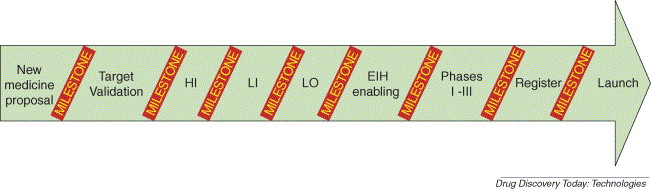

Figure 1. Hit and lead identification (HI and LI, respectively) are two critical components in the drug discovery process necessary for efficient lead optimization (LO). Enhancing the rates of success at any transition milestone transition point (such as LI and LO) is a means to enhance the overall drug discovery process.